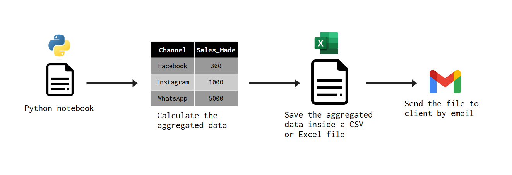
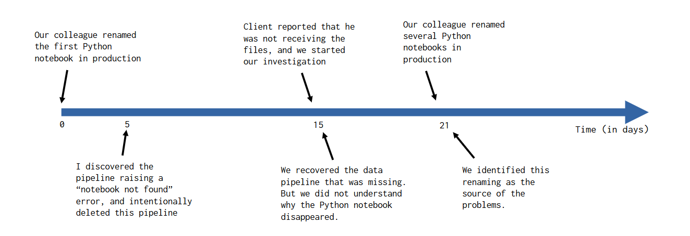

Introduction
Last week, me and my team encountered a situation where we need to find out why and how a certain problem occurred. We needed to understand which decisions led to this problem, and why they were made. Pretty normal stuff right?
But understanding what happened was only possible for us because we track every change and every decision that we make with Git, by signing commits and writing Pull Requests (or PRs for short). This article uses this real world situation that we faced to showcase how Git and formal processes to register changes in the codebase (like PRs) are a critical part for improving decision making and understanding how your past decisions are affecting you in the present.
I begin the article describing what problem occurred, and in sequence, I explain what mistakes were made, and how Git helped us to identify those mistakes.
What is the argument in this article?
To improve your decision making process, you need to actually remember what decisions you made in the first place. Sometimes, that remembering is actually hard.
Different people use different strategies to keep track of the decisions they made. Some people keep various notes about each decision, others, like to document their decisions inside the cards created in the kanban board. But regardless of what strategy you choose, it will always involve some kind (or level) of tracking and documenting the decisions you make along the way.
In this article, I show an real world example where Git and formal Pull Request played this role. In other words, this article seeks to show how Git and Pull Requests can help you to keep track of the decisions that are being made in your team. Who and why they made these decisions? When these decisions took place? etc.
The data pipeline where the problem occurred
The problem occurred in one of the many data pipelines1 that we manage and support. This specific data pipeline was a “aggregate the data and send the results to client” type of pipeline. In more technical details, this pipeline was a JSON file that cointained all metadata that described what this pipeline was, what steps it performed, what were the dependencies and settings for each task, which specific time of the day these tasks should be performed, etc.
The main step (or task) performed in this pipeline was triggering the execution of a Python notebook. This notebook was perfoming the following steps:
- aggregates the raw data to get the total sales made per channel.
- saves the result in a CSV or Excel file.
- send this CSV or Excel file by email to the client.
The following diagram show these steps in a visual manner:

What problem occurred ?
Our client notified us saying that they were not receiving the CSV files for about a week. So we started to search for this data pipeline, to look at it’s execution logs. But we did not find anything! Both the Python notebook and the JSON file that described the data pipeline itself disappeared! Is like they never existed.
Not having the Python notebook, is the same as not having any pipeline at all. Both Python and JSON files had simply disapeared from our repository. But the client did received some files a few weeks ago, so, we were positive that this pipeline did existed at some point in the past. But where did it go? Why it disappeared?
Investigating the commmits
We use Git to store and track any changes in all of our data pipelines. In other words, all changes that we make to the JSON files that describes each one of our data pipelines are tracked by Git. As you well know, a file do not simply disappear from a Git repository. When a file is removed from a Git repository, is because someone intentionally deleted the file and committed the change to the repository.
Since we knew that this data pipeline existed at some point in the time, I started to investigate, and follow the history of commits. Took around 30 minutes to find the exact commit that deleted the data pipeline, and, oops! The commit was created by me! I deleted the data pipeline from our repository. Ok… now Why? Why did I deleted this data pipeline?
At this point, Git already helped me to answer two very important questions which were: 1. Who deleted the pipeline? 2. When it was deleted? Because every commit you create in Git have a timestamp associated with it, and the name of the author of that commit, we knew at that point that it was me that deleted the pipeline, a few weeks ago.
Why I made this decision?
But that alone does not answers another part of the problem. We still need to know why I made that decision. Why did I intentionally deleted this pipeline? This is the point where Pull Requests2 can help us.
Every time we want to publish some changes that we made to a data pipeline, we need to document these changes in a PR. We describe what changes we made, and why we made them. I found the associated PR that contained the commit I made, and in the description of that PR I found the reason why I deleted the pipeline.
The pipeline was constantly failing with a “notebook not found” error. In other words, the pipeline was trying to trigger the execution of the Python notebook that I mentioned before. But the notebook itself was not found, and because of that, it was throwing this error. This means that the pipeline was basically useless, it was creating execution costs without delivering any value. It also means, that the Python notebook disappeared before the pipeline was deleted.
So I deleted the pipeline. This way we were not spending our resources trying to execute something that we know is going to throw an error, and will not give any value.
Another part of the problem
Ok, now we know why I deleted the pipeline. But that in itself raises some new questions for us. Why did the Python notebook disappeared? The reality is that… we didn’t know why. Unfortunately, our Python notebooks were not hosted inside a Git repository. This means that we did not traced any changes that were made to the notebook.
To be fair, our Python notebooks are hosted inside a Databricks instance, and, if you are familiar with Databricks, you know that actually the Databricks platform do track (to some extent) every change that is made to the notebook, with the Revisions pannel.
So yes, we do have some level of monitoring over the changes made to these notebooks. But not enough to actually understand why that particular notebook was missing. In other words, this “Revision” pannel of Databricks is not capable of tracking removal actions over notebooks.
We were only able to figure it out what was happening in the week after, when we discover that other Python notebooks were also missing. Was a set of three notebooks, called Job_ClientX_Opened_Sessions, Job_ClientX_Sales_per_Channel and Job_ClientX_Opened_Tickets. These three notebooks were located at the folder ClientX. So we had a file structure like this:
├───📁 ClientX
│ ├───Job_ClientX_Opened_Sessions.py
│ ├───Job_ClientX_Sales_per_Channel.py
│ └───Job_ClientX_Opened_Tickets.py
│
├───📁 ClientY
├───📁 ClientW
└───📁 ClientZ
...At that specific day, we found in the execution logs that , close to 08:00 AM, this set of notebooks was avaialable, in other words, they did existed in our Databricks environment close to 08:00 AM. But on that same day, when we searched again at 11:00 AM for these same notebooks in the Databricks environment, we did not found them anymore.
We knew at that point, that these notebooks disappeared within the last 3 hours. It was very recent. But a detail called our attention. The folder ClientX, where these notebooks were supposed to be, was filled with other notebooks with similar names, like this:
├───📁 ClientX
│ ├───[ClientX] Opened sessions.py
│ ├───[ClientX] Sales per Channel.py
│ └───[ClientX] Opened Tickets.py
│
├───📁 ClientY
├───📁 ClientW
└───📁 ClientZ
...That looks weird, because it go against our naming conventions. Me and my team do not name files like this. Than, we raised the question: “wait! I think someone is renaming these notebooks”. Later that day, our suspicions were confirmed. A colleague outside of our team was intentionally renaming the Python notebooks that were published in the production environment. That is why we were not finding the notebooks, because their names were modified.
The immediate consequence of this renaming action was that the link between the Python notebooks and the data pipelines was lost. That is, the data pipelines were trying to execute these notebooks, but they did not find these notebooks, because their original names were lost.
If we did used Git to track every change made to these python notebooks, we would have discovered this problem much earlier, and could acted to fix it. But the damage was already made. As next steps, we had to:
- rename the notebooks back to their original names;
- remove some of the privileges of our colleague in the Databricks environment;
- advise this colleague about what happened, and how his actions caused harm.
What mistakes were made?
Below we have the timeline of important events we described:

In my head, there was at least three mistakes that were made across this timeline:
- I did not communicated the removal of the pipeline properly;
- Our colleague renamed a notebook in a production environment;
- Not using Git to track changes in the notebooks at production environment.
Deleting the pipeline was not a mistake. But my mistake was to not communicate my action properly. I mean, I did communicated the removal of the pipeline to my peers, but I did not communicate it to my colleague outside of my team that was also involved with this specific client, the same colleague that started to rename multiple notebooks.
In other words, if I had communicated to him that I deleted the pipeline, we would probably have a dialog similar to this:
Colleague: “wait! Our client is still using this data pipeline, why did you removed it?”
Me: “because the pipeline was not finding the notebook”
Colleague: “but why is it not finding the notebook?”
Me: “well, the pipeline is looking for a notebook called ‘X’, but this notebook disappeared. It does not exist in our environment.”
Colleague: “wait! I remember of this notebook! I think I just renamed it a few days ago”
Me: “wait! You renamed a notebook in production?”
Colleague: “yes, I think so”
With this dialog we could probably solved the puzzle much quicker, and we could fix the mistakes before any more harm could be created. So if I did communicated to this colleague that I deleted the pipeline, we would probably reach the core of the problem more quickly.
Everything started when our colleague decided to rename a notebook directly in the production environment without us knowing. This was certainly a mistake, but who does not mistakes sometimes right? As we described in the article, the “Revision system” of Databricks is limited, and did not tracked this very important change, and because of that, we initially had no idea what have happened with the notebook.
We took one week to actually figure it out what was causing the “disappearance” of the notebooks. If we did use Git to track all changes made to the notebooks published in the production environment, we would spot the “renaming action” made much, much, much quicker. So not using Git over these notebooks was a mistake too.
How Git helped us to solve the issue
Git is an extremely powerful tool, and by having a centrallized server that register all changes you make to the project, you can look at the past, understand what changes you made. You can actually see the evolution or the timeline of your project, and perceive how much features, or, how much improvements you made to the project. You can also spot the decisions you made in the past. This gives you the ability to re-think your decision making process.
One fact we knew from the beggining: a data pipeline and a Python notebook simply disappeared from our environment. With Git we manage to track down and understand how, when and why did the data pipeline disappeared, and we were able to locate the data pipeline again, and restore it to it’s previous state, and re-send the files. If we did used Git on the notebooks, we could also track down the renaming operations made to these notebooks as well.
Not only did we fixed the issue, but also, by understanding what happened, and what decisions were made that led to the dissapeareance of the data pipeline, we could identify the flaws in our decision making process. And by identifying these issues, we can now address them, so we do not make these mistakes again.
Footnotes
What is a pipeline? A pipeline is just a sequence of steps (or tasks) to be performed at a specific time of the day (or a specific day of the week or of the month, etc.). And a data pipeline is a pipeline that contains tasks that load, transform, send, or ingest data in some form.↩︎
In essence, a Pull Request (or PR) is a proposal to perform a
git mergeoperation. In other words, you create a PR when you want to merge the changes you made in a branch into another branch (most of the times the main branch). The “proposal” aspect of a PR means that it needs be approved to be effectively performed. A PR is not a feature from Git. It is actually a standard feature from most Git service providers. So you create a PR inside a Git services platform such as GitHub, GitLab and Azure DevOps, and not inside Git itself. If you are not familiar with PRs, the GitHub documentation has an excellent article about it↩︎